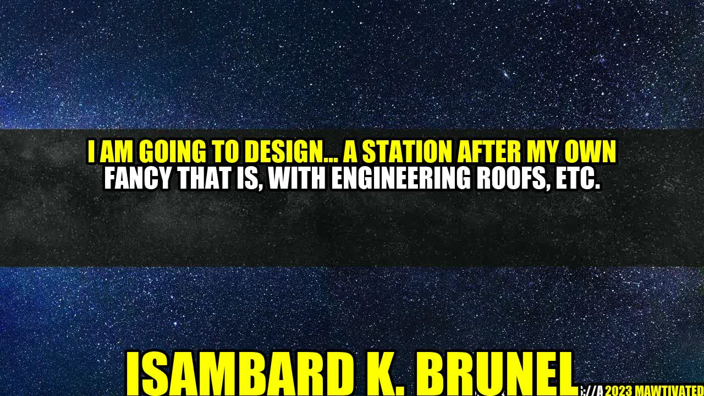

The Engineering Marvel of Brunel's Railway Stations

The Inspiring Story of Brunel
"I am opposed to the laying down of rules or conditions to be observed in the construction of bridges lest the progress of improvement tomorrow might be embarrassed or shackled by recording or registering as law the prejudices or errors of today" - Isambard K. Brunel
Isambard Kingdom Brunel, a British civil engineer, is renowned for his exceptional work in bridge and railroad construction during the industrial revolution era. Brunel was not only responsible for Britain's largest ships, but he is also credited with designing some of the most beautiful railway stations in the country. Manifesting his engineering prowess and art-worthiness, Brunel was a man of high regard in his time and, till date, is celebrated as a legend.
For Brunel, design and function went hand in hand. He believed that architecture and engineering could be combined to create a perfect harmony of beauty and utility. By incorporating both design and engineering, Brunel strived to provide infrastructure that not only served the fundamental purpose but also left a lasting impression on society.
Brunel's legacy as an engineer, designer, and architect can be seen in the railway stations he designed across the country.
Designing a Station after My Own Fancy
With his engineering genius and artistic flair, Brunel left remarkable stations that have stood the test of time. Brunel's railway stations stand out for their unique architectural style and ingenuity.
In a letter to his friend and architect Augustus Pugin, Brunel expressed his desire to "design...a station after my own fancy that is, with engineering roofs, etc.". True to his word, Brunel's stations boasted of grandiose structures. The main area was dominated by a wide, open space with giant archways on both sides. High ceilings and large windows allowed natural light to enter the station, making the area bright and airy.
Roofing: Brunel engineered massive roofs, which were both innovative and visually alluring. Constructing brick arches for covering the platforms was the conventional way of building railway stations infrastructure in Brunel`s days. However, Brunel thought of more ambitious designs with broader spans, such as wrought-iron frameworks covered with glass.
Grand entrances: Large pavilions and towers adorned the entrance of Brunel's railway stations. These served as notable landmarks in the surrounding areas, making the station easier to locate and adding to its grandeur.
Convenience: Brunel was keen on passengers' convenience. He implemented several features to make travelling a more comfortable experience for passengers, including the inclusion of waiting rooms, lavatories, and tea rooms.
Examples of Brunel's Great Railway Stations
One of Brunel's notable railway stations is the Bristol Temple Meads. Bristol Temple Meads reflects the essence of Brunel`s structural style with grandeur and novelty. Its wavy roofs made of wrought iron and glass were unlike anything seen before, and it remains an iconic landmark today.
Bristol Temple Meads Station – A classic example of Brunel's railway architecture
The Paddington Station is another instance of Brunel's excellence. The station has an impressive arched glass roof, meant to give passengers the feeling of embarking on a journey through the heavens. The building has played a significant role in western civilization and has become an inspiration for many structures that came afterward.
The Paddington Station – A masterpiece of Victorian engineering
In Conclusion...
In conclusion, Brunel`s railway stations stand as a symbol of a bygone era but remain relevant even today, inspiring modern-day architecture and design. Many designs and structures of the railway stations still survive, delivering a unique experience to travellers. Brunel's legacy as an engineer, designer, and architect lives on.
Design and engineering can be blended to create a harmonious beauty, which is not just about aesthetics but also about practicality and convenience.
The grand and innovative designs of Brunel`s stations have stood the test of time, and they stand today as remarkable landmarks of Victorian engineering.
It never hurts to dream big and incorporate creative ideas in your design. Your structure might just become a timeless masterpiece.


Curated by Team Akash.Mittal.Blog
Share on Twitter Share on LinkedIn